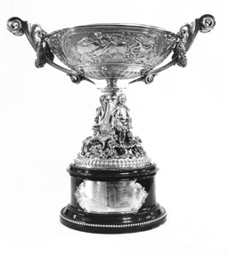
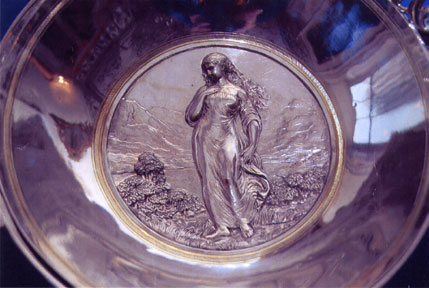
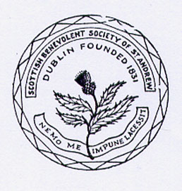
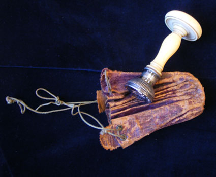
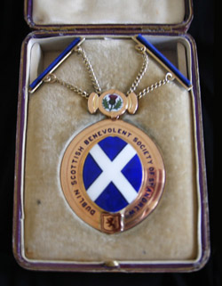
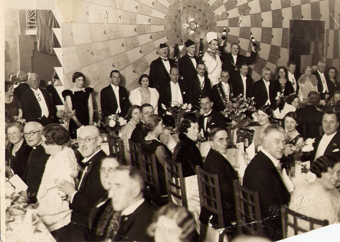

History
The Society was founded on St. Andrew's Day in 1831 "for the relief of indigent and distressed natives of Scotland in Dublin". In the early years funds were dispersed for fares back to Scotland, for burials and in weekly payments to widows and other deserving families, which continued for over a hundred years.
By this stage assisted passages back to Scotland were becoming much less frequent and the main disbursement of funds was through "annuities" or "pensions" to elderly and needy Scots in Dublin.
This, the original purpose of the Society, is still maintained and today we are paying monthly pensions and giving Christmas gifts to elderly people and making small donations to a number of charities, which over the years have included the Royal Hospital, Donnybrook, the Peter McVerry Trust, Ruhama, Aware, Focus Ireland, RNLI, Mendicity, and Médecins Sans Frontières.
The Silver Tassie


Burns' Silver Tassie, 1861 London Silver Presentation Cup with liner, designed by Italian sculptor Rafaelle Monti, and made by the London silversmith Charles F. Hancock, founder of the jewellers Hancocks who were, and are today, the makers of the Victoria Cross.
The Tassie has been in the possession of the Society since 1952 and is most recently on loan to the Irish Freemasons' Hall where it is on display. The Tassie depicts a scene from Tam O'Shanter on one side and the Cotter's Saturday night on the other. Under the handles the poems To a Mountain Daisy, To a Mouse, The Twa Dogs, and On Seeing a Wounded Hare are represented. On the inside Highland Mary is depicted and on the plinth there are words from some of these poems.
The Society Seal


Nemo me impune lacessit is the Latin motto of the Order of the Thistle. The motto also appears, in conjunction with the collar of the Order of the Thistle, in later versions of the Royal coat of arms of the Kingdom of Scotland and subsequently in the version of the Royal coat of arms of the United Kingdom used in Scotland. It is often translated as No one attacks me with impunity, or rendered in Scots as Wha daur meddle wi' me?

The President's Medal

The Dublin Scottish Benevolent Society of St. Andrew in 1934
PAST PRESIDENTS
- Alderman J Hubbard Clark - 1930/2
- A.T. McKay - 1933/6
- Wm. McMillan - 1937
- William W. Warnock - 1938/41
- John Brooks - 1942/3
- John Russell, F.C.A. - 1944/5
- James H. Cathcart - 1946
- David Stewart C.A. - 1947/8
- David H. McQuiston - 1949/50
- George Martin - 1951/2
- William Davidson - 1953/4
- David B. Ferguson - 1955/6
- G.A. Johnstone - 1957
- Lt - Col. A. J. Crozier - 1958
- F.W. Young - 1959
- Major E.L. McColl - 1961/2
- P.G. Warnock - 1963/4
- C. McQuiston - 1965/6
- M.G. Martin - 1967/8
- J. S. Anderson - 1969/70
- J.C. Doherty - 1971/2
- D. Weston - 1973/4
- R.D. Burry - 1975/6
- J.M. Inglis - 1977/8
- J.J. Mitchell - 1979/80
- M. Brodie - 1981/82
- P.G. Warnock - 1983
- P.C. Scott - 1984/5
- S. Fleming - 1986-88
- D. M. Munro - 1989-91
- John Gibson - 1992-2000
- Rev. Tom Dundas - 2001-7
- Hazel Convery - 2008-2010
- Pat McCullen - 2011-2014
- Iain Munro - 2015-